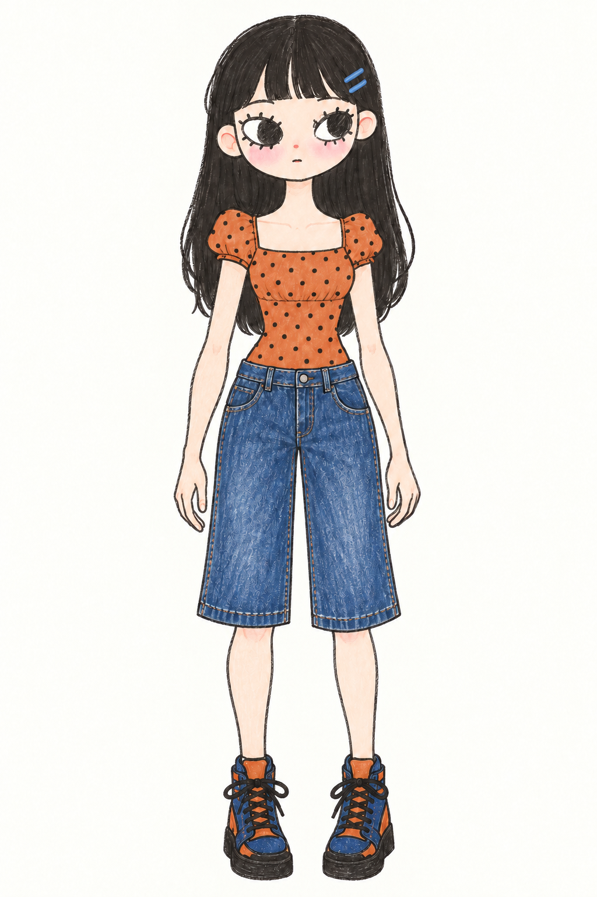
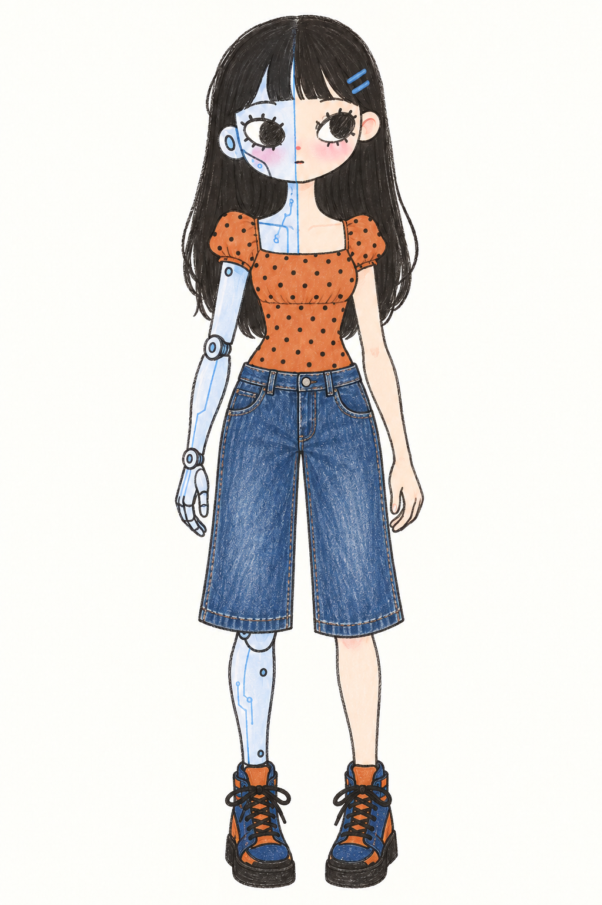

uncanny®
LOOK TWICE.Checking page…LOCAL ANALYSIS


A second look.
Play a video to capture six frames.
View six captured frames
Analyze captures and checks six frames on this Mac. The signal describes the sample, not the whole video.